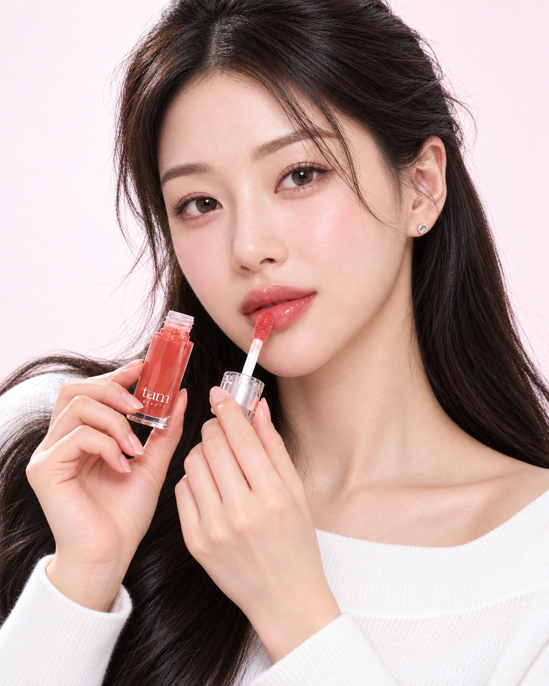
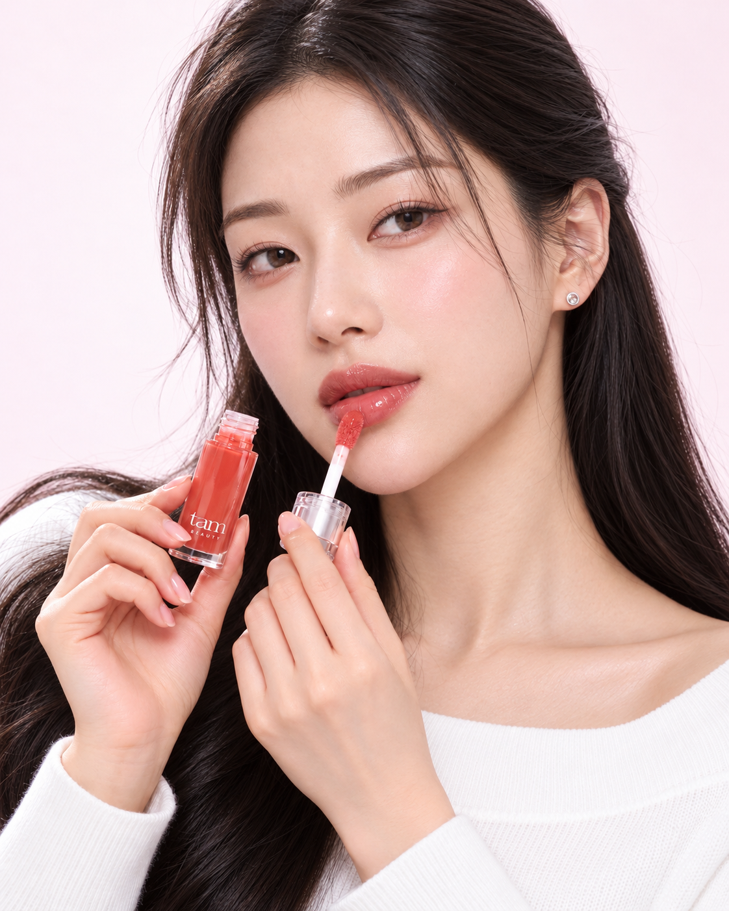
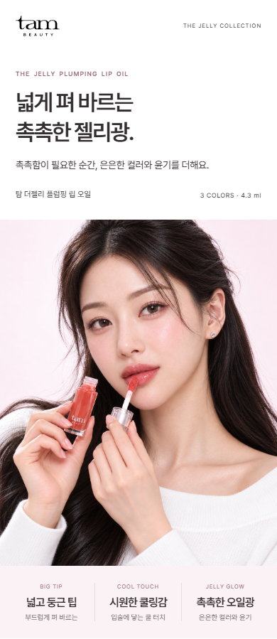
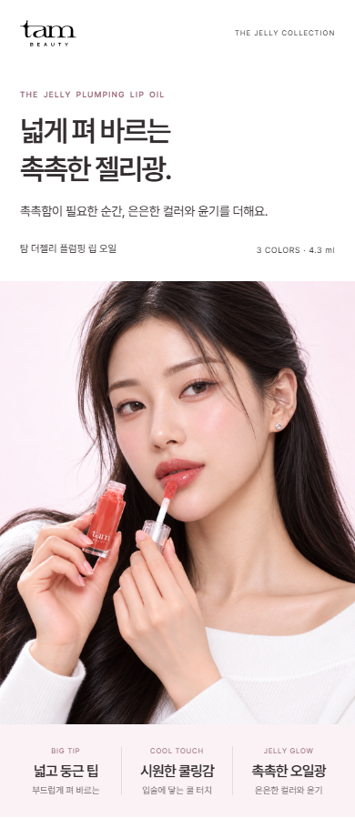

기존

또렷하고 둥근 눈매와 매끈한 피부 표현.
A는 기존 인상을 유지하며 피부 광택과 눈매를 다듬었습니다. B는 눈매를 길고 차분하게 조정하고 얼굴 윤곽을 바꿨습니다. 밝은 핑크 톤과 상세페이지 구성은 그대로 두었습니다.
또렷하고 둥근 눈매와 매끈한 피부 표현.

광택을 줄이고 피부결을 살린 안. 기존 얼굴과의 차이는 작습니다.
A 상세페이지 보기 ↗
눈매와 윤곽의 변화가 더 큰 안. 인형 같은 인상을 덜어내는 방향입니다.
B 상세페이지 보기 ↗

